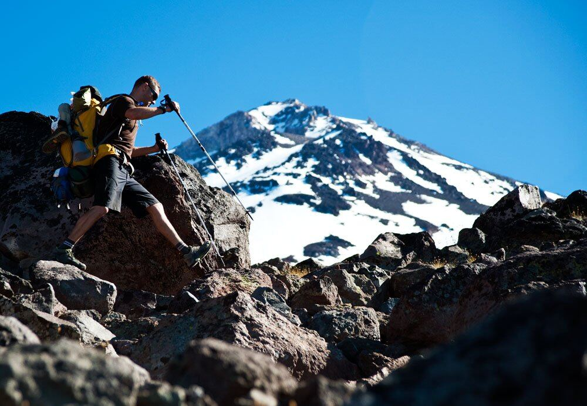
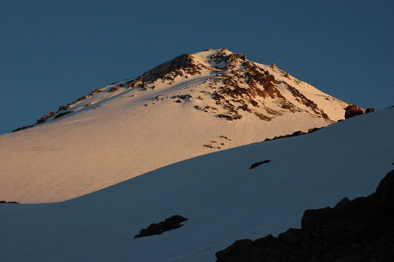
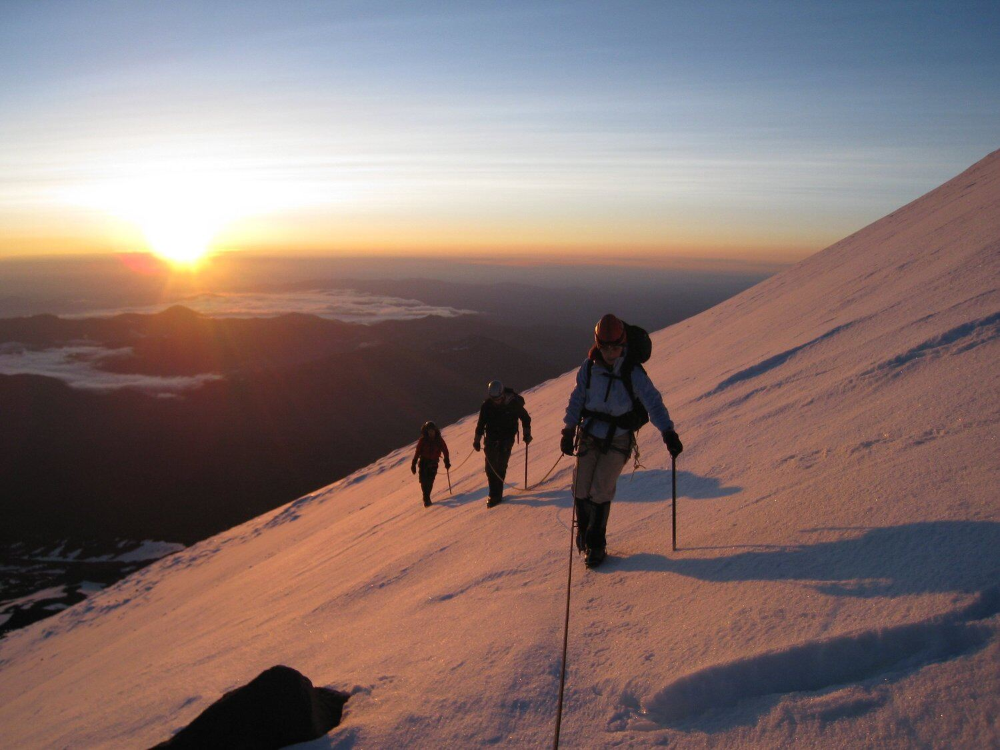
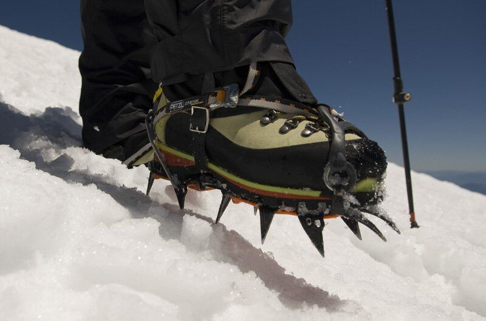
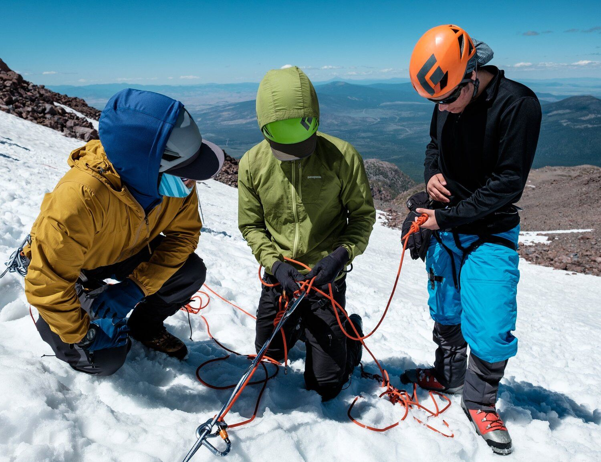
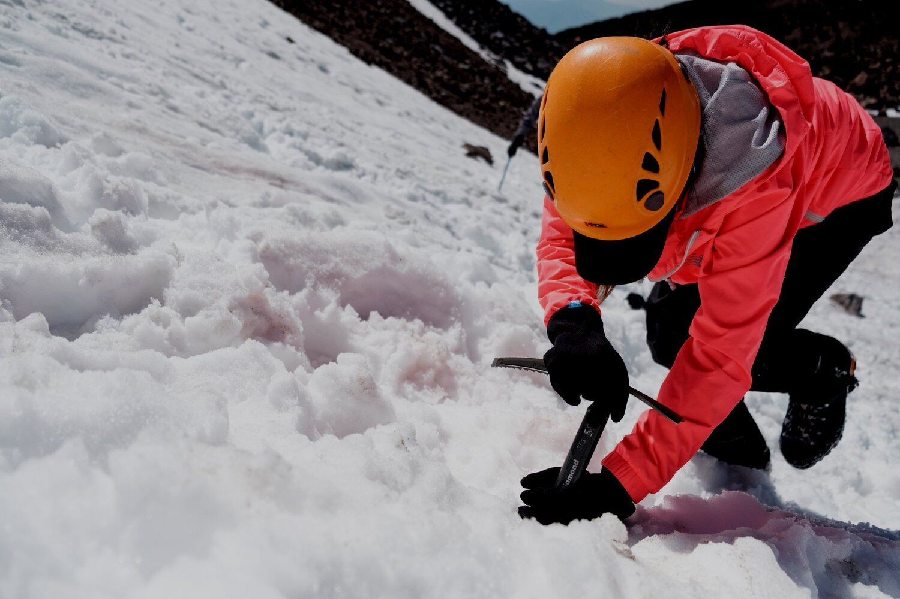
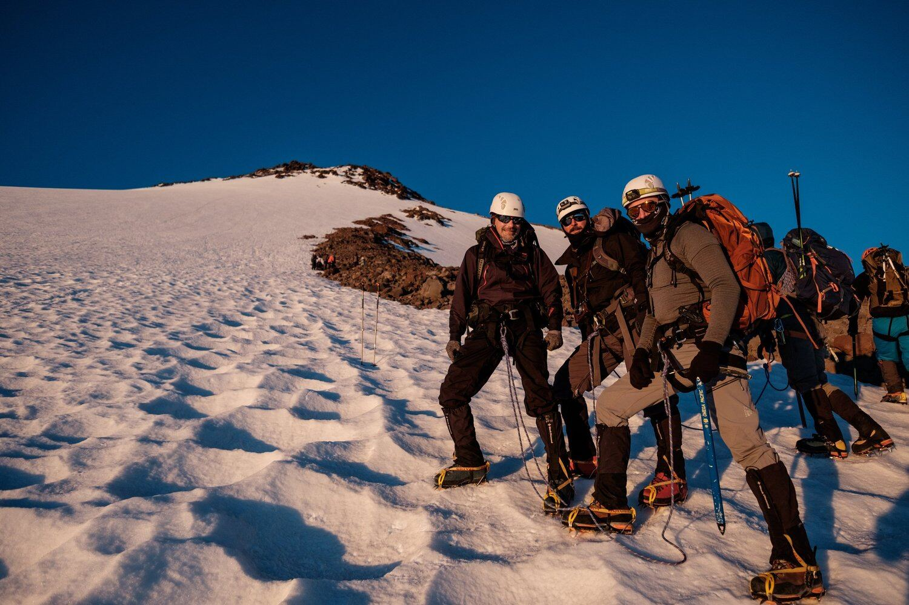

North Side · Alternate Routes | West Face
This is a summit climb with an extra day for skills training, glacier school, and acclimation. The 4-day course and summit climb is for the mountaineer who wants to build a solid foundation of mountain skills and the opportunity to climb a snow route on Mt. Shasta. This is an ideal schedule with more time to learn skills, build a strong climbing team, and enjoy the mountain while increasing the odds of summit success.
We’ll thoroughly instruct in snow movement, crampon use, ice axe techniques, rope travel, snow anchors, and more. With an optimal schedule for success and skill building, this seminar is ideal for a summit climb and skills building.
Due to the popularity of this course, and high summit success rates on our 4-day vs. our shorter trips, we will be offering these as long as conditions allow. Depending on trailhead access, early season trips will be on the southwest aspect of Mt. Shasta and climb the West Face or Avalanche Gulch routes. Once the road to the North Side trailhead is snow-free and accessible, we will move the venue to the north side Hotlum-Bolam route. Often this occurs in Mid-May, or sometimes not until Mid-June.
Mountaineering instruction includes:
On this climb, we aim to create personal connections with Mt. Shasta and the surrounding land as well as lasting connections to your new climbing community.
We bring over 45 years of experience guiding on Mount Shasta and are the original guiding company for this special mountain. We know Shasta better than anyone and aim to provide a professional and positive experience for all climbers.







Training for Mt. Shasta (PDF) · our 24-page fitness guide.
The Shasta Mountain Guides® staff is a diverse, skilled, and fun group of individuals. Their common bond is a pure passion for being in the mountains and sharing that desire with friends, both old and new. We strongly believe in providing the highest level of service and quality of experience while climbing Mt. Shasta.
We are local professionals and are committed to your safety and enjoyment. SMG is the original guide service on Mt. Shasta and we are on the mountain daily. We specialize in Mount Shasta and the Shasta-Trinity National Forest. When you climb with us, your trip is supported by our collective experience and knowledge of the mountain.
Meet your guidesItinerary subject to change & the summit of Mount Shasta is subject to safe weather and snow conditions.
projected itinerary starting at the North Gate trailhead may vary due to weather and trail conditions.
For lodging in the town of Mount Shasta before and after your trip we recommend our partners at Summit Lofts and LOGE Mt. Shasta. They offer a discount to our climbers and guests.
Send a few details and a guide will reply within one business day with a recommendation, dates and next steps. No phone tag.
Already booked and need us right now? Call 530.926.3117.